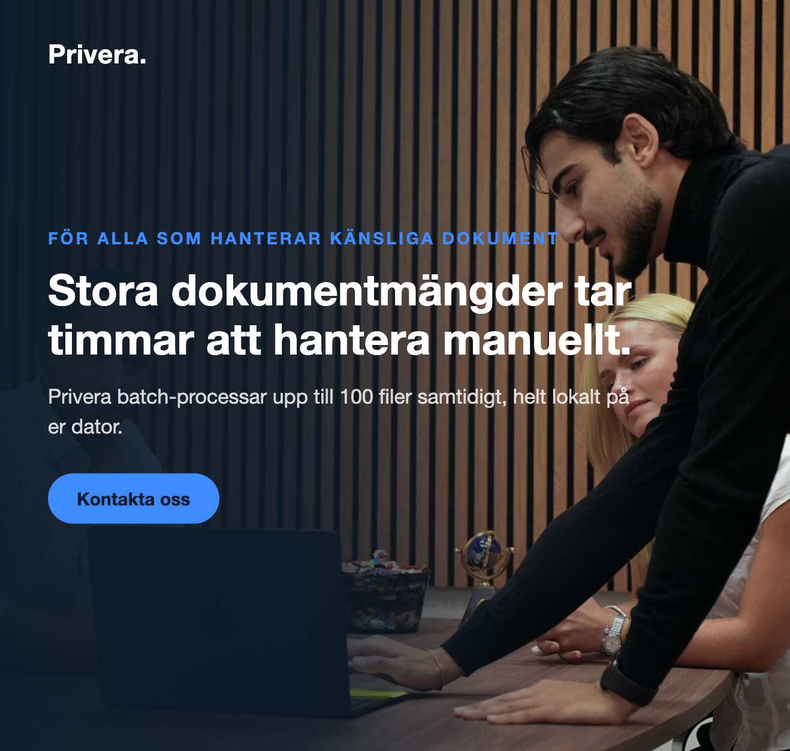
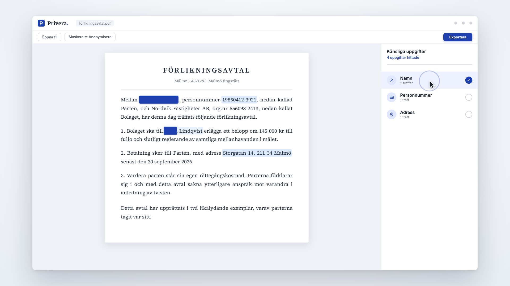

Redaction without the busywork
Anonymizing a legal document by hand means reading every line, hunting for names, personal numbers and addresses, and hoping you did not miss one. Privera does that work for you. Open a file, and it finds the sensitive information automatically: names, personnummer, addresses, phone numbers, emails, bank details.
You stay in control. Every detection is shown for review before anything is masked, and the finished document is exported with the sensitive pixels actually removed, not just covered up. Nothing is uploaded anywhere. The entire process runs on your own machine.
Built for people who handle sensitive documents
Law firms
Redact privileged material for court filings, discovery and client sharing without letting it leave the firm.
HR, finance & public sector
Anonymize employment records, invoices and case files before archiving or handing them out.
Anyone under GDPR
Large document volumes take hours to handle manually. Privera batch-processes up to 100 files at a time, locally.

Open, review, export

The document renders in the center with every hit color-coded and grouped by category on the right. Toggle categories, click a hit to exclude it, or draw your own redactions. Then export a clean file. Try it at privera.se ↗
Three engines, one clean result
Detect. Three engines read the document together. Regex with Luhn checksum validation catches structured identifiers like personnummer and IBAN. Dedicated patterns catch phone numbers and emails. KB-BERT, a Swedish language model from the National Library, finds names, organisations and places. Scanned documents fall back to Tesseract OCR automatically.
Propagate. When a name is found once, it is masked everywhere, including a signature on the last page that the model only tagged on page one. Addresses grow to cover house numbers and postcodes, even when they wrap across a line break.
Redact, for real. Most tools draw a black box over the text. Privera removes the underlying pixels, so the content cannot be recovered by copy-paste or forensic tools.
Prove it. Every run writes an audit file with SHA-256 hashes of input and output, a tamper-evident log for GDPR compliance. The whole pipeline is covered by 179 automated tests.